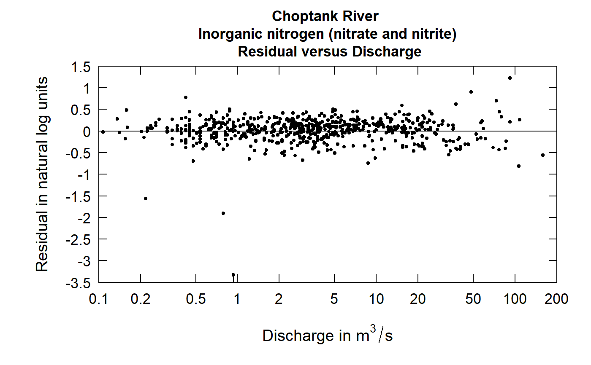
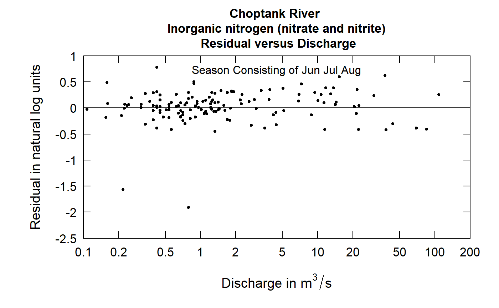

R/plotResidQ.R
plotResidQ.RdThis function produces a plot of the residuals from WRTDS, expressed in natural log concentration units versus the discharge shown on a log scale. The function also provides an alternative for viewing the standardized residuals, where the each residual is divided by its estimated standard error
Although there are a lot of optional arguments to this function, most are set to a logical default.
Data come from named list, which contains a Sample dataframe with the sample data, and an INFO dataframe with metadata.
plotResidQ(eList, qUnit = 2, tinyPlot = FALSE, stdResid = FALSE, printTitle = TRUE, col = "black", lwd = 1, cex = 0.8, cex.axis = 1.1, cex.main = 1.1, rmSciX = FALSE, customPar = FALSE, randomCensored = FALSE, ...)
| eList | named list with at least the Sample and INFO dataframes |
|---|---|
| qUnit | object of qUnit class |
| tinyPlot | logical variable, if TRUE plot is designed to be plotted small as part of a multipart figure, default is FALSE. |
| stdResid | logical variable, if TRUE it uses the standardized residual, if FALSE it uses the actual, default is FALSE |
| printTitle | logical variable if TRUE title is printed, if FALSE not printed (this is best for a multi-plot figure) |
| col | color of points on plot, see ?par 'Color Specification' |
| lwd | number line width |
| cex | numerical value giving the amount by which plotting symbols should be magnified |
| cex.axis | magnification to be used for axis annotation relative to the current setting of cex |
| cex.main | magnification to be used for main titles relative to the current setting of cex |
| rmSciX | logical defaults to FALSE, changes x label from scientific to fixed |
| customPar | logical defaults to FALSE. If TRUE, par() should be set by user before calling this function (for example, adjusting margins with par(mar=c(5,5,5,5))). If customPar FALSE, EGRET chooses the best margins depending on tinyPlot. |
| randomCensored | logical. Show censored residuals as randomized. |
| … | arbitrary graphical parameters that will be passed to genericEGRETDotPlot function (see ?par for options) |
eList <- Choptank_eList # Water year: plotResidQ(eList)